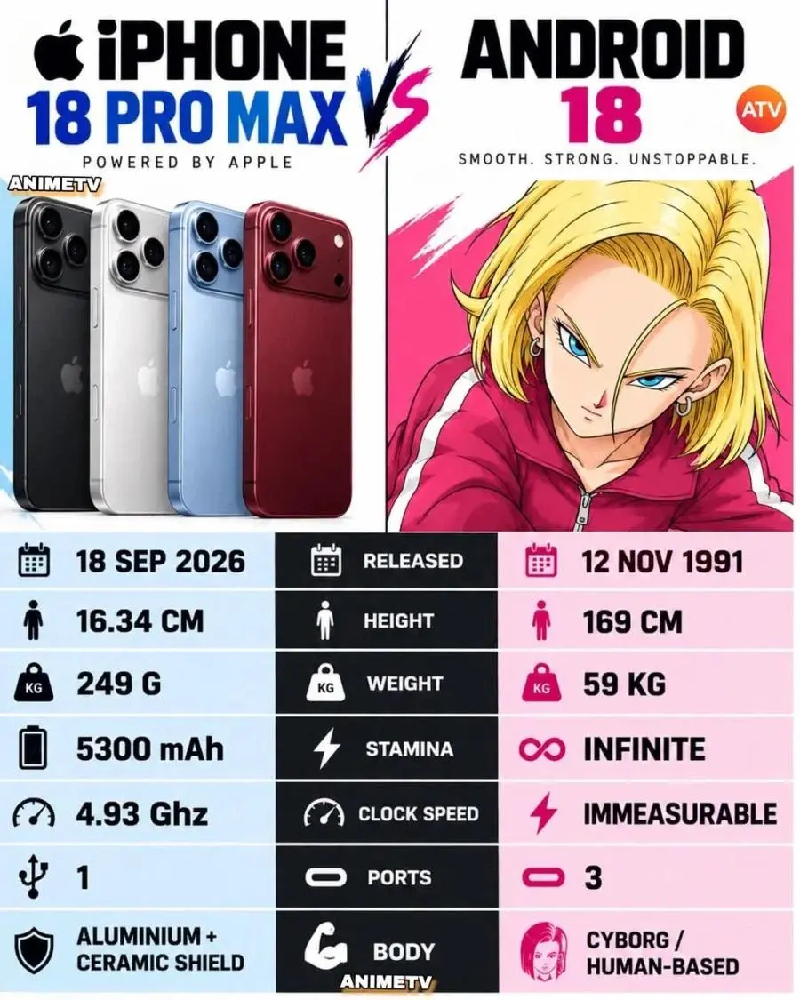

3포트를 가진 안드로이드의 압승

3포트를 가진 안드로이드의 압승
늙지도 않음
input 3개? 어떤 구멍을 말하는거지? (진짜 모름 ㅎㅎ)
눈 코 귀 입 똥꼬 뷰지 기타등등 (나도 모름 ㅎㅎ)
구멍이 3개지요-!
고추 넣는 구멍
구멍 3개는 씹 ㅋㅋㅋㅋ
ㄹㅇ 압승이네ㅋㅋ
ㅓㅜㅑ
눈 코 구멍 앞 뒤 입 배꼽
10개가 넘는거같은데?
똥구멍 보지 입 총 3개
구멍 3개 ㄷㄷ
임신근데 진짜 어케한거임
대머리 = 정력좋음
확률의 희박하다 = 될떄까지 함
인간베이스라
인간인데 개조한거라 장기는 남아 있다는 설정
결국 대머리가 따먹었다고 합니다